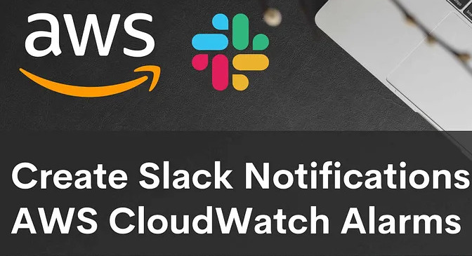

Visitor Count: Blogs & Demo AWS DevSecOps (Snyk) Session for AWS UG Punjab AWS Real Time DevSecOps Project with Fawz cp AWS CI CD Pipeline Creation - STYAVA.Dev Create Resume API using AWS Lambda, Terraform & Github Actions AWS CI/CD Pipeline Creation for AWS ECS - Step by Step Amazon CloudWatch Logs Analysis using Amazon Athena & Amazon QuickSight Terraform Backend Using S3 and DynamoDB With State Locking AWS VPC Creation - Step by Step Guide WordPress with Amazon RDS database to Elastic Beanstalk AWS CI/CD Pipeline Creation - Step by Step Deploy simple web app to AWS ECS - Fargate  Create Slack Notifications for AWS CloudWatch Alarms Make an Azure file share and connect using Windows
Personal Projects Personal Static website deploy uisng AWS Service AWS Real Time DevSecOps Project With Snyk Create Azure DevOps Pipeline with Azure App Service & Container Registry Three Tier Web App Deploy to AWS Jenkins pipeline with GitOps to deploy code into a Kubernetes cluster. CI part is done via Jenkins and CD part via ArgoCD Clinic REST-API made using AWS Serverless Services Cloud Native Monitoring App Deploy on AWS (Docker, AWS ECR, AWS EKS) Deploy PHP App to AWS ElasticBeanstalk, AWS ECS & Docker Compose Check Git Repo branches Deploy 2048 game on AWS Elastic Beanstalk using Docker
Jenkins pipeline with GitOps to deploy code into a Kubernetes cluster. CI part is done via Jenkins and CD part via ArgoCD
Lasantha Sanjeewa Silva Hi, I'm Lasantha Sanjeewa Silva, AWS Community Builder and Article Writter related to Cloud, DevOps & System Admin. Connect With Me LinkedIn Twitter Github Youtube Email : lsanjeewa947@gmail.com © By Lasantha Sanjeewa Silva 2024. All rights reserved.